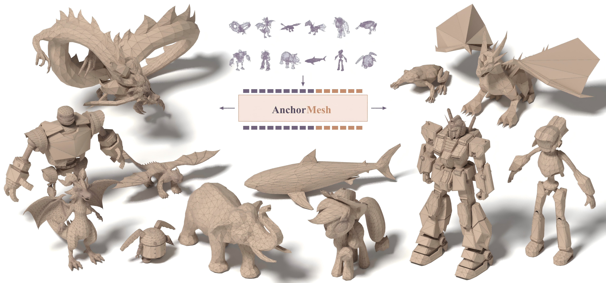
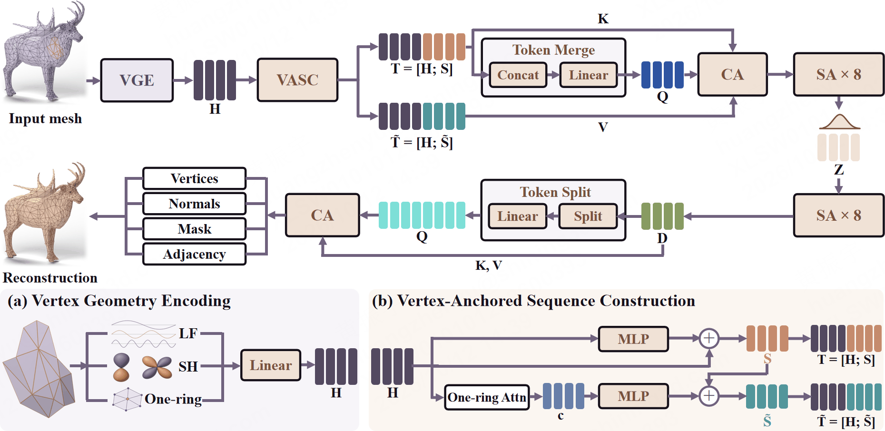
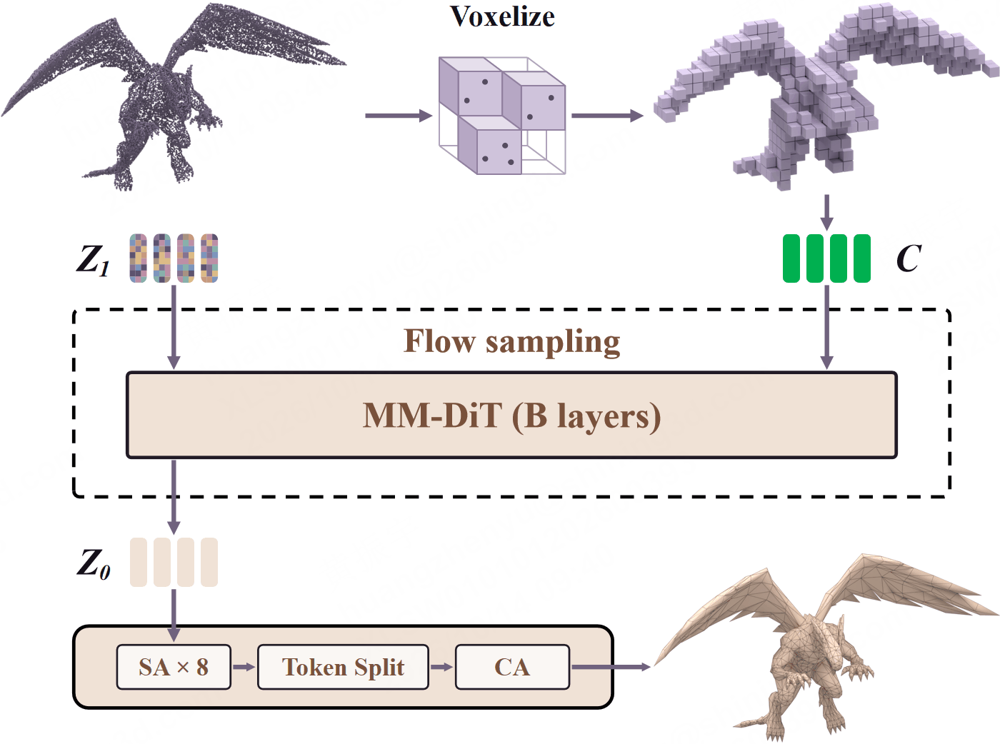

AnchorMesh: Vertex-Anchored Autoencoding
for Artistic Mesh Generation

AnchorMesh preserves source vertex cues before compression for artistic mesh reconstruction and point-cloud-conditioned generation. AnchorVAE jointly learns mesh geometry and connectivity, while MM-DiT models rectified flow in the mesh latent space.
Method
AnchorVAE. VGE encodes vertex positions, normals and one-ring geometry. VASC retains source descriptors within the encoder capacity and learns supplementary features before compression. The shared decoder jointly reconstructs vertex geometry and mesh connectivity.

MM-DiT. A multimodal diffusion transformer models point-cloud-conditioned rectified flow in the AnchorVAE latent space. At inference, it transforms Gaussian noise into mesh latents, then uses the frozen AnchorVAE decoder to reconstruct explicit geometry and connectivity.

Reconstruction
Loading meshes…
Generation
Loading meshes…
Cite AnchorMesh